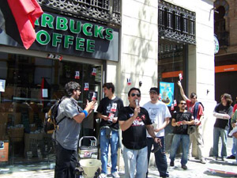

Submitted on Thu, 06/12/2008 - 2:55pm
On June 7, Wobblies and supporters held loud and visible protest rallies at
the stores of the art supplies chain Boesner in Colone, Frankfurt, Berlin,
Vienna and Graz. With these actions, they protested against the management of
the Boesner shop in Colone, who prevented an organizing drive of the Colone IWW
by harassing workers who had tried to form a works council (Betriebsrat)
there.
The german labour law guarantees the formation of works councils elected by
the workers in shops with 5 workers or more and prohibits management action
against the election process of these institutional bodies. When members and
supporters of the IWW at the Boesner shop announced the elections for a works
council the management began to panik. Workers were questioned and taken under
pressure in interviews at the managers office. One day before the election
should take place, the management held a meeting with all workers, where they
threatened to cut wages and extend working hours if a works councils would be
formed. The forced the workers to vote publically in front of the managers
against a works council. Rustrated by the divisions succesfully made by these
illegal employers actions, the IWWs withdraw their election
announcement.
A few months later the management of Boesner Colone began to implement the
first measures they had threatened the workers with: the extension of working
hours by opening of the stores on saturdays (which hadn?t been the case before
and obviously had been intended by them anyway. But neither did they employ more
workers to staff the extra shifts, nor did they pay a weekend bonus, which is
not uncommon for weekend work in Germany. The shifts should have to cope the
extra-load of work with more intensified stress at work.
Submitted on Thu, 06/12/2008 - 2:48pm
Disclaimer - The opinions of the author do not necessarily match those of the IWW. The image pictured to the right did not appear in the original article, we have added it here to provide a visual perspective. This article is reposted in accordance to Fair Use guidelines.

Before sunrise on a Monday morning, outside a sterile office park in
Compton, a convoy of small, beat-up cars, none of them newer than 1995, arrives
at the offices of the trucking firm Calko Speedline. One by one, the car's
drivers emerge, ranchera and mariachi and est?s escuchando a Piol?n por la
ma?ana! competing from their radios. They buy coffee from the taco truck that
follows them in, and assemble in small groups, huddled in circles among their
big rigs - hulking red, green, blue and white mammoths lined up along the curb,
their diesel-burning engines grumbling into action one by one.
The drivers' day of waiting begins.
"My name's Chicho. Everybody knows me. You can ask anyone, 'Do you know
Chicho?' and he'll say yes."
Chicho, born Hernan Robleto, is short, round, nearly bald and, when he
speaks, energetically animated. His English is nearly indistinguishable from his
Spanish; sometimes, while listening to him, it's possible to lose any conscious
sense of which language he's speaking. At the Calko office, he paces among the
various groups while office personnel inside quietly field calls from terminal
operators at the ports of Los Angeles and Long Beach about ship traffic and
schedules; later, they'll give each of the men directions to their first load of
the day, a container of goods destined for an intermediate shipping facility
somewhere inland or farther down the coast, where it will be transported still
farther, to distribution centers all over the country, by truck or
train.
Submitted on Thu, 06/12/2008 - 2:38pm
 The Union of Comerical and Hotel workers CNT-AIT
in Sevilla, Spain along with the Grand Rapids Starbucks Workers Union
(IWW) have announced a Global Day of Action scheduled for July 5th. The
two groups are asking social organizations, unions, and individuals
from around the world to promote and participate in this day of action.
The Union of Comerical and Hotel workers CNT-AIT
in Sevilla, Spain along with the Grand Rapids Starbucks Workers Union
(IWW) have announced a Global Day of Action scheduled for July 5th. The
two groups are asking social organizations, unions, and individuals
from around the world to promote and participate in this day of action.
On April 24th, 2008 a barista named Monica was fired for her
union activity from a Starbucks in Sevilla, Spain. She was a member of
the Union of Commercial and Hotel Workers of the Confederacion Nacional
de Trabajadores (CNT). Now with the support of all CNT affiliates, the
International Workers Association, and the Starbucks Workers Union
(IWW) they are demanding justice for Monica.
Submitted on Fri, 06/06/2008 - 1:54pm
Grand Rapids firing comes in the midst of Unfair Labor Practice charges being investigated by the NLRB against Starbucks.
Grand Rapids, MI (06/06/2008)- Starbucks terminated a barista active in the IWW Starbucks Workers Union today as part of its ongoing effort to combat a growing movement of employees pushing for a living wage and secure work hours. The barista, Cole Dorsey, was fired after two years of service while he was coordinating a union recruitment drive at Starbucks stores in Grand Rapids. Starbucks' pretext for the illegal anti-union firing was that Dorsey was guilty of some months-old attendance infractions.
"Today I joined the growing number of baristas that Starbucks has fired in its relentless union-busting campaign," said Cole Dorsey. "Starbucks' disrespect for the right to join a union is appalling and absolutely will not stop our efforts to have a voice at work."
Submitted on Mon, 06/02/2008 - 10:57pm
From the Industrial Worker, June 2008
Since the IWW Industrial Union 460 began organizing in foodstuffs warehouses 3 years ago, we’ve organized in ten workplaces with varying degrees of success. One issue at every shop has been the employer’s failure to comply with wage and hour laws.
Many companies have retaliated by firing workers for their union activity. Workers have fought back through strikes, pickets, demonstrations, and selective legal action, among other tactics. We find legal action to be most effective when combined with these other methods, and when viewed as a means and not an end. This is a report on our legal status, but readers should understand that legal action is one of many tools workers are using to win their demands.
About a year and a half after we began utilizing legal action, several favorable rulings have recently come down and several settlements have been reached. Since the rulings have just came down, companies have not yet begun making payments.